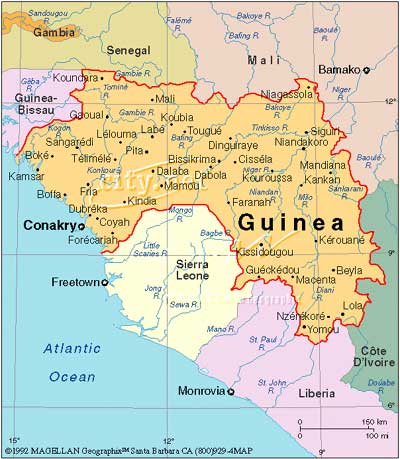

December 16, 2017 - January 5, 2018
This exciting adventure is great for someone wanting more of a home stay experience with a beautiful African family. Based at our simple, comfortable campus in Tomboliya, a lovely suburb of Guinea’s capital Conakry, you will enjoy the local markets and community living. This trip includes lots of cultural immersion, an incredible 3 day trip to the rain forest, as well as a 3 day trip to an extraordinary tropical island. A great first-time-to-Africa trip!
Trip details and itinerary
-
Group Accommodations
Comfortable and secure, our accommodations will be a short taxi ride from markets and internet cafes
-
Meals
Three delicious meals a day of West African fare: fish, chicken, rice, fresh fruits and vegetables (vegetarian options available)
-
Dance Classes
Two each day (5 days a week), taught by principal dancers of Les Ballets Africains and other professional dance instructors
-
Drum Classes
One each day (5 days a week), taught by principal drummers of Les Ballets Africains and other professional drum instructors (students focused on drum will have 2 drum classes each day, and are encouraged to drum for dance classes)*
-
Transportation
Ground transportation to and from the Airport is provided
-
Trip to Kindia
Transportation to/from and accommodations in the beautiful Village of Kindia!
-
Group Accommodations
Comfortable and secure, our accommodations will be a short taxi ride from markets and internet cafes
-
Trip to Roume
Transportation to/from and accommodations in the luscious tropical island off the coast of Guinea
Tentative itinerary
Day 1: Arrive in Guinea!
Days 1-5: stay in Conakry
Days 5-7: Visit Kindia!
Days 7-13: Stay in Conakry
Days 13-16: Visit Roume!
Days 16-21: Stay in Conakry
Day 21: Depart Conakry
Sample daily schedule
8:00-9:00am: Breakfast
9:00-11:00am: Dance/Drum Class*
10:30-12noon: Music/Song Class
12noon-1:00pm: Lunch
1:00-3:30pm: Free Time
3:30-5:00pm: Drum class*
5:30-7:00pm: Dance class*
7:00-8:00pm: Dinner
8:00-???: Free Time/Performances/Language Classes...etc.
*NOTES: Students focused on drumming can replace the morning dance class with a drum class, and are encouraged to drum for the afternoon dance class.
We always offer separate dance & drum classes for Beginning & Intermediate and Advanced levels, so you can get the most value from your level specific dance and drum classes.
Travel Requirements for Guinea, West Africa
Once registered you will receive a complete Guinea Travel Packet with a full list of travel requirements, packing list, flight requirements, and more - everything you need to simplify your planning.
Overview of requirements
- Current passport
- Travel Visa for Guinea
- Travel insurance
- Proof of Yellow Fever vaccination
- Emergency contact information
- Copy of your flight itinerary
- Optional: register with embassy/consulate
Visa requirements
The Guinean embassy requires that you submit your passport, two completed application forms, and your Yellow Fever vaccination certificate when you apply for your visa. The following website gives you more specifics about how to obtain your visa, and again, once you are registered we will send you detailed information about the best and fastest way to get your visa.
www.traveldocs.com
Vaccines and Medications
While the Yellow Fever Vaccine is the only requirement, we encourage you follow all of the current recommendations and requirements given by the Center for Disease Control (CDC) with regard to vaccines and medications.
wwwnc.cdc.gov/travel/destinations/guinea
US Department of State
Optional - register with embassy/consulate
Travel registration is a free service provided by the U.S. Government to U.S. citizens who are traveling to, or living in, a foreign country. Registration allows you to record information about your upcoming trip abroad that the Department of State can use to assist you in case of an emergency. Americans residing abroad can also get routine information from the nearest U.S. embassy or consulate.
travelregistration.state.gov/ibrs/ui/
Flights
NOTE: We have selected specific flights for you to purchase, please contact us for those details.
Explore this trip
Trip pricing & options
3 week trip - $2,450 (or $2,150 if registered by July 31)
Choose your payment schedule
- OPTION 1 - Full payment with registration
- OPTION 2 - $500 at registration, $1,000 by October 1, balance by November 1
Airfare not included - see trip details and itinerary for what's included in your trip
Cancellation fees
- $200 before November 1
- $500 after November 1
- $1,000 after December 1
- 100% after 1 week prior to start of trip
Customized Trip Options
Shorter or longer stays can be arranged.
We also offer substantial multi-trip discounts. Contact us for specifics.
Are you ready?
Sign up for coastal Guinea tripImage Magnific Popup


Imagine your first day in Guinea
... you wake up to the distant sacred call to prayer, chickens clucking and a warm breeze across your face.
First off, you eat some of Guinea's famous rice porridge with the best banana you have ever tasted, fueling your body for your first morning dance class.
Ahhh, African Dance ... IN AFRICA! After the more-extraordinary-than-you-have-ever-heard-before drumming and amazing personalized dance instruction stops, you catch your breath while meeting each of your new African family members, each one more beautiful, polite and excited to meet you than the last.
You clean yourself up, eat some salad and you’re off to the market with a couple of new friends ... bargaining down the price on a mask, and negotiating your way through the busy streets of Conakry. You can’t wait to work with the Tailor to design just the right outfit with the fabric you just bought!
You make your way back home just in time for drum class, where you learn the very rhythm you danced to this morning. Now, saturated with this rhythm, you join the others in your second fabulous dance class of the day – you have enough time and attention to really get the moves.
Dinner is prepared with love and attention - hospitality beyond which you have experienced before.
After dinner: hair braiding, language lessons, laughing and connection.
Finally, tired and full, it is time for bed ... tomorrow holds a trip to see Les Ballets Africains rehearse, and a big wedding party.
As you drift off to sleep to the sweet melodic sound of the balaphone, you think to yourself, wow, this really is going to be the trip of a lifetime!
“My journey to the land of Guinea with One World Dance & Drum was truly life altering. I am not the same person I was before this experience and there's not a day goes by that I don't think of it. The people of Guinea are like no other. Strong, gentle, joyful, inclusive, spirited, a lightness of being - all in spite of crushing poverty and a lack of infrastructure to meet the most basic needs we tend to take for granted. Music and song are tightly woven into the fabric of everyday life in Guinea, a music that grabs your soul and holds you up in good times and bad. I am forever grateful to One World Dance & Drum for opening my world to Guinea, for being incredibly mindful hosts and for taking care of us like family. And they work tirelessly to spread their love for this culture by keeping us connected to it here in our US community - through dance classes, workshops, communications and friendly Guinean gatherings throughout the year. Thank you One World Dance & Drum!" (December 2008 Guinea Trip) ”
“Design is not just what it looks like and feels like. Design is how it works.”